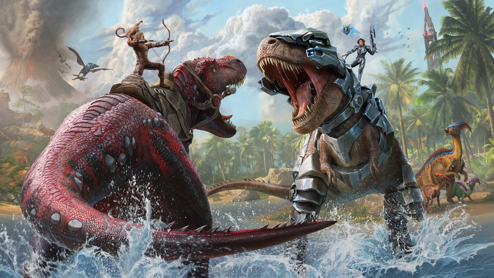

Ark Survival Ascended Fanpage
Az ASA (Ark Survival Ascended) a játékipar leghíresebb és legjátszottabb dino-túlélő játéka, amelyet a Studio Wildcard fejlesztett. A játékosok egy hatalmas, nyitott világban találják magukat, ahol dinoszauruszokkal és más ősi lényekkel kell szembenézniük, miközben túlélésre törekednek. A játék lehetőséget ad a játékosoknak arra, hogy felfedezzék a világot, építsenek bázisokat, tenyésszenek dinoszauruszokat és harcoljanak más játékosokkal vagy a környezettel.
